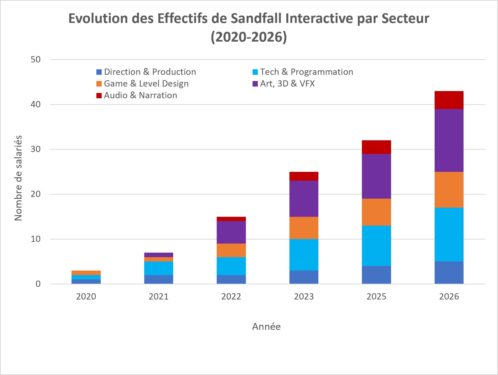
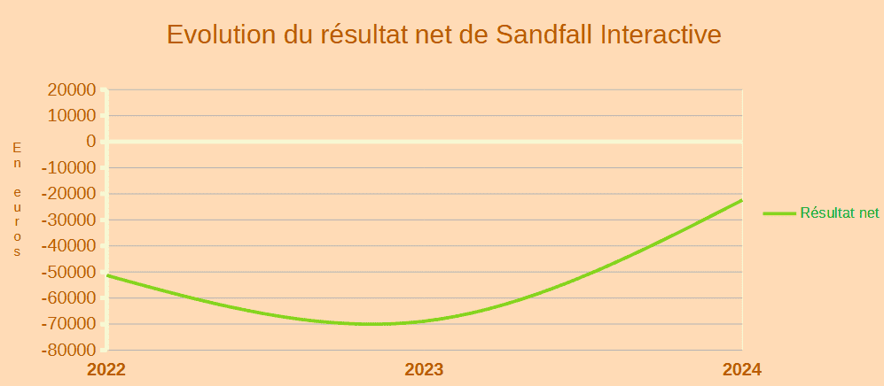

Ce graphique en bâtons empilés illustre l'augmentation constante du nombre de salariés au sein du studio Sandfall Interactive depuis sa création en 2020 jusqu'en 2026. On y observe une forte expansion des équipes, atteignant plus de 40 collaborateurs.
Cette croissance se concentre particulièrement dans les domaines techniques (Tech & Programmation) et artistiques (Art, 3D & VFX), qui constituent le cœur de la production globale du studio.

Ce graphique en courbe présente la trajectoire du résultat net (en euros) de l'entreprise entre 2022 et 2024. Durant la phase de pré-production et de développement intensif, le studio enregistre un résultat négatif, atteignant son point le plus bas en 2023 à près de -70 000 €.
L'année 2024 marque un redressement significatif, traduisant la montée en puissance du studio et la maîtrise de ses investissements financiers avant la commercialisation de ses projets.